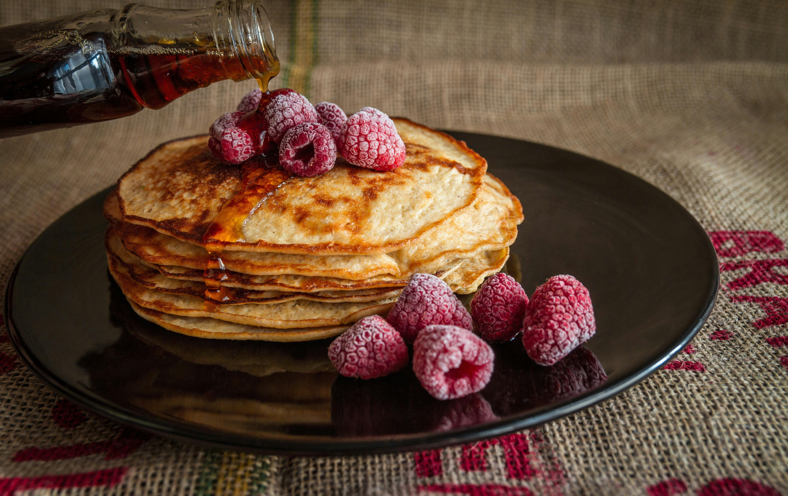

Pancakes

This recipe guarantees light, super fluffy pancakes! We’ve been making them for years,
so I’ve spent years tweaking the recipe. These are made completely from scratch with ingredients
I bet you already have in your kitchen so say goodbye to the boxed pancake mix. These are so much better!
Ingredients
- Flour
- Sugar
- Baking powder
- Milk
- Egg
- Butter
- Vanilla
Steps
- Prepare the butter: Melt the butter and set it aside to cool slightly.
- Combine dry ingredients: In a medium bowl, whisk together the flour, sugar, baking powder, and salt.
- Combine wet ingredients: In a separate bowl, whisk together the milk, egg, melted butter, and vanilla extract. Don’t worry if the butter solidifies a little.
- Mix the batter: Create a well in the center of your dry ingredients. Pour the milk mixture into the well and gently whisk until the flour is just incorporated. A few small lumps are perfectly normal. As the batter rests, you should see it begin to bubble. It will be thick, like cake batter. If it seems too thick, add a splash more milk to thin it out.
- Preheat the skillet: Place a large skillet or griddle over medium heat. To check if it’s ready, sprinkle a few drops of water on the surface. They should “dance” around and evaporate quickly.
- Cook the pancakes: Brush the skillet with melted butter for crispy edges (you can skip this if using a good nonstick pan). Scoop the batter onto the skillet using a 1/4 cup measure or a large cookie scoop, then gently spread each pancake into a 4-inch circle.
- Flip the pancakes: After 1 to 2 minutes, the edges will look dry, and bubbles will form and pop on the surface. Flip the pancakes and cook for another 1 to 2 minutes until they’re lightly browned and cooked through. Enjoy your pancakes right away with warm syrup, more butter, and berries.
Back To Main